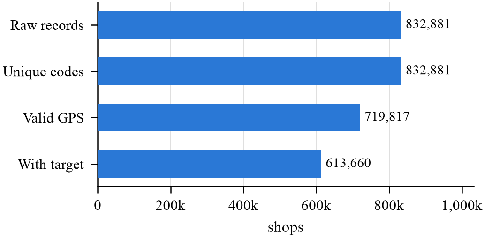

Abstract—Bangladesh’s fast-moving consumer goods (FMCG) distribution network spans roughly 720,000 retail outlets across all 64 districts, yet allocation planning is still largely done on intuition; industry estimates place the resulting waste at 15–25% of distribution capacity. We apply an integrated supervised, unsupervised, and clustering approach to the recently released Comprehensive Retail Network Dataset of Bangladesh (719,817 GPS-tagged outlets, a 42-SKU catalogue, and monthly sales targets for 17 products). We engineer 48 spatial and structural features per shop; discover 8 interpretable shop archetypes with K-Means, cross-checked with hierarchical clustering and DBSCAN; benchmark four regression models for sales-target prediction (best test R² 0.45 against a linear baseline of 0.02); train a target-miss risk classifier reaching ROC-AUC 0.869; and rank 71,982 anomalous shops for fraud and data-error triage with per-cluster Isolation Forest and Local Outlier Factor. Hyperparameters of the winning models are selected by Bayesian optimization (Optuna TPE) and all headline metrics are reported with 5-fold cross-validation. The pipeline is containerised and additionally re-implemented on a Hadoop HDFS + Apache Spark cluster with a division-partitioned warehouse whose row counts exactly reproduce the reference implementation. The analysis also surfaces a finding of direct business value: 85,167 book entries with no recorded attributes form their own “ghost-shop” archetype — a machine-generated audit list for the duplicate and fraudulent entries that motivated the study.
Index Terms—retail analytics, clustering, XGBoost, SHAP, SMOTE, anomaly detection, Bayesian optimization, Hadoop, Apache Spark, Bangladesh
I. Introduction
Fast-moving consumer goods reach Bangladeshi consumers through one of the densest retail networks in the world: small shops, kiosks, and wholesalers distributed across 8 administrative divisions, 64 districts (zila), and 515 sub-districts (upazila). Distributors must decide, shop by shop and month by month, how much product to allocate and how often a field representative should visit. In practice these decisions are still made largely on intuition and historical habit. The consequences are well documented in the industry: urban shops are over-stocked while rural shops face stock-outs, target shortfalls are identified only at quarter-end when the quarter is already lost, and an unknown share of outlets in any distributor’s books are duplicates, ghost shops, or fraudulent entries.
Until recently this problem could not be studied quantitatively at national scale, because no public data described the network. That changed with the release of the Comprehensive Retail Network Dataset for Bangladesh [1], which provides GPS coordinates, structural attributes, and monthly sales targets for hundreds of thousands of outlets under a CC BY 4.0 license. To the best of our knowledge, the dataset is still largely unexploited, and this project is among the first attempts to apply an integrated machine-learning pipeline to it.
We pose four research questions. RQ1: what natural archetypes exist among the outlets? RQ2: can a shop’s monthly sales target be predicted from its location, type, importance, and neighbourhood density? RQ3: can shops that will miss their targets be identified in advance? RQ4: which shops behave anomalously compared with their peers? We answer them with, respectively, clustering (K-Means, hierarchical, DBSCAN), regression (a linear baseline against Random Forest, XGBoost, and LightGBM, explained with SHAP), classification (logistic regression, Random Forest, and XGBoost with SMOTE class balancing), and per-cluster anomaly detection (Isolation Forest and Local Outlier Factor). Hyperparameters of the winning models are chosen by Bayesian optimization, all headline metrics are cross-validated, and the entire pipeline is reproducible with one command in Docker. Because the course concerns big data analytics, we additionally re-implement the pipeline on a Hadoop HDFS storage layer and an Apache Spark cluster with MLlib, and compare the two execution paths.
The remainder of this paper is organised as follows. Section II reviews related work. Section III describes the data, the cleaning decisions, the engineered features, and an exploratory analysis. Section IV presents the methodologies and experimental results. Section V concludes with findings, limitations, and future work.
II. Related Work
The methods used in this project are established tools of data mining, and we review them alongside their uses in retail analytics. Outlet segmentation is one of the oldest applications of clustering in commerce; the K-Means algorithm traces back to Lloyd [2], while the silhouette coefficient [3] and the Davies–Bouldin index [4] remain the standard internal criteria for choosing the number of clusters when no ground truth exists. Density-based clustering (DBSCAN [5]) offers a complementary view that does not presuppose the number of clusters and can flag noise points, which is why we use it as a structural cross-check rather than a primary method.
For tabular prediction, ensembles of decision trees are the dominant approach. Random Forests [6] reduce variance by bagging many decorrelated trees, while gradient-boosted trees fit trees sequentially to the residuals of their predecessors; XGBoost [7] and LightGBM [8] are the two most widely used implementations. A known criticism of boosted ensembles is their opacity, addressed by SHAP [9], which decomposes each prediction into additive per-feature contributions with game-theoretic guarantees. Class imbalance is handled with SMOTE [10], which synthesises minority-class examples by interpolation; following standard practice we apply it strictly inside training folds to avoid leakage. For anomaly detection we combine Isolation Forest [11], which isolates anomalies with random axis-parallel splits, and the Local Outlier Factor [12], which compares each point’s local density with that of its neighbours. Hyperparameter search uses the Tree-structured Parzen Estimator, a Bayesian optimization method, as implemented in Optuna [13]. Reference implementations come from scikit-learn [14] and imbalanced-learn.
On the infrastructure side, the Hadoop Distributed File System [15] provides replicated block storage across data nodes, and Apache Spark [16] is the de-facto engine for distributed data processing, with MLlib [17] as its machine-learning library. Our design follows the common industrial pattern in which distributed engines handle storage and preparation while a single node trains the models whose exact algorithms are unavailable in MLlib. The dataset itself is documented in [1], including a 13.58% missing-GPS rate that our own profiling reproduces exactly. No published work, to our knowledge, has combined clustering, regression, classification, and anomaly detection on this dataset in one pipeline — the gap this project addresses.
III. Data
We use the “Comprehensive Retail Network Dataset of Bangladesh” from Mendeley Data [1] (dataset DOI 10.17632/mgzvngzng2.1, CC BY 4.0), collected between February 2022 and October 2024 and downloaded on 5 July 2026. All statistics below are computed from the actual files by our profiling code.
A. Data Description
The dataset comprises three interlinked CSV files, summarised in Table I; the full column dictionary of the shop file appears in Table VIII (Appendix). Three properties required care. First, the identifier shop_code mixes numeric and hexadecimal-like strings; a slice of purely numeric codes makes a naïve loader infer an integer type, after which every join fails silently, so our loader pins it to a string. Second, the two large files are ordered differently, so row-aligned sampling yields zero join overlap; subsamples must be joined by key. Third, 20,849 shop codes (2.4%) are duplicated in the targets file, sometimes once with values and once empty; we de-duplicate keeping the valued record.
TABLE I
The Three Files of the Dataset
| File | Rows | Content |
|---|---|---|
shop_info_with_geo | 832,881 | GPS, business type (12), style (3), importance (3), place nature, division/zila/upazila |
product_target_for_shop | 853,732 | monthly target per shop for 17 products + Total |
product_info | 42 | SKU catalogue: 24 base products, 5 brands, 9 types, price tiers |
B. Data Cleaning and Missing Values
Table II and Fig. 1 summarise the cleaning funnel. Of 832,881 raw records, 113,064 (13.58%) have no GPS at all — empty coordinate cells with geometry = POINT EMPTY — matching the missing rate reported in [1]. We remove these rows rather than imputing them, since an invented location would poison every spatial feature; the remaining 719,817 equals the published outlet count exactly, and zero non-null coordinates fall outside the national bounding box (20.5–26.7°N, 88.0–92.7°E). Joining the de-duplicated targets attaches a monthly target to 613,660 shops (85.3%).
TABLE II
The Preprocessing Funnel
| Stage | Shops | Rule |
|---|---|---|
| 1. Raw records | 832,881 | — |
| 2. Unique codes | 832,881 | drop duplicated shop_code (none) |
| 3. Valid GPS | 719,817 | present and inside Bangladesh |
| 4. With target | 613,660 | key join, valued rows preferred |

Fig. 1. The preprocessing funnel from raw records to model-ready shops.
The categorical attributes exhibit striking joint missingness: exactly 85,167 records (10.23%) lack the business type, and the same records simultaneously lack style, importance, and organizer. We keep them under an explicit Unknown level rather than deleting or refilling them; Section IV-A shows that the clustering isolates precisely this population as its own archetype, turning the missingness into the ghost-shop audit list the project was motivated by. The nearly empty visit_target column (99.69% missing) was dropped.
Because refilling categoricals from spatial neighbours is a natural suggestion, we tested it empirically. For shops with known attributes we hid the true value and predicted it from the majority vote of the 10 nearest neighbours (haversine distance). Table III shows the outcome against the majority-class baseline: location-determined fields are near-perfectly recoverable and shop_style carries real spatial signal, but shop_type would be wrong for one shop in three, and shop_importance imputation is worse than blind majority guessing. We therefore impute only geographic fields (and optionally style at a ≥70% agreement threshold, behind an explicit flag with indicator columns), never the business attributes. A full-pipeline sensitivity experiment with imputation enabled improved supervised metrics (risk ROC-AUC 0.857→0.881) but collapsed the taxonomy from 8 archetypes to 3 by blending the ghost segment into ordinary clusters, so the reference pipeline keeps imputation off.
TABLE III
10-NN Imputation Accuracy on Held-Out Known Shops
| Attribute | 10-NN acc. | Baseline | Decision |
|---|---|---|---|
| zila (district) | 99.8% | 11.3% | impute |
| shop_style | 96.5% | 65.2% | ≥70% agreement only |
| shop_type | 62.5% | 51.6% | never |
| shop_importance | 86.9% | 87.9% | never (below baseline) |
C. Feature Engineering
From the cleaned records we engineer 48 features per shop (Table IV). Neighbourhood density is computed with a BallTree under the haversine metric, answering all 719,817 radius queries in seconds (O(n log n) rather than O(n²)); centrality is the great-circle distance to the shop centroid of the district. Low-cardinality categoricals are one-hot encoded with Unknown explicit. The monthly target is used exclusively as the supervised label, never as an input.
TABLE IV
Engineered Features (48 Columns)
| Group | Features | Computation |
|---|---|---|
| Density | density_500m / 1km / 5km | BallTree haversine counts, self excluded |
| Centrality | dist_to_district_centre_km | great-circle distance to district centroid |
| Product mix | n_products_targeted | products (of 17) with positive target |
| Position | latitude, longitude | validated GPS |
| Structure | type, style, importance, place nature, division | one-hot; Unknown explicit |
D. Exploratory Data Analysis
Fig. 2 shows the outlets by division: Dhaka dominates with 220,775 shops, Chittagong follows with 128,751, and Barisal is the smallest division (35,700; a further 138 clean shops carry no recorded division). Fig. 3 shows the distribution of the monthly total target among the 613,660 joined shops, which is heavily right-skewed: the median is 14.1 while the mean is 28.9 and the raw file reaches 91,283 — a small population of wholesale-style outlets carries targets three orders of magnitude above the typical shop. This skew matters throughout Section IV: it is why squared-error regression metrics are volatile across folds, and why anomaly detection must compare shops only with their own kind.

Fig. 2. Clean outlets per division (719,817 shops).

Fig. 3. Distribution of the monthly total target among joined shops, clipped at the 99th percentile. The mean sits far above the median, reflecting the extreme wholesale tail.
IV. Methodologies and Experimental Results
We present the four analytical phases, one research question each, followed by the distributed implementation. All experiments use a fixed random seed (42); supervised models are evaluated on a held-out 20% test split and additionally with 5-fold cross-validation. All code is Python 3.11 inside Docker; reproduction commands are given in the Appendix.
A. Unsupervised Learning: Shop Archetypes (RQ1)
We standardised the 48 features and applied K-Means [2] for every k from 3 to 9 with 10 restarts. Each k was scored with the silhouette coefficient [3] (10,000-shop subsample) and the Davies–Bouldin index [4] (all rows). Fig. 4 plots both criteria; they agree on k = 8 (silhouette 0.187, DB 1.94). As cross-checks, agglomerative (Ward) clustering on a 20,000-shop subsample corroborates the structure (silhouette 0.145), while DBSCAN [5] at default settings collapses to a single cluster with 98.7% noise. We report the DBSCAN outcome because it is informative: the retail network is a dense continuous fabric rather than separated islands, which also explains the modest silhouette — archetypes overlap at their boundaries.

Fig. 4. Model selection for the number of clusters. Both internal criteria favour k = 8 (dotted line).
Table V profiles the archetypes and Fig. 5 shows their sizes. The taxonomy is directly interpretable: cluster C4 (28.5%) is the typical semi-urban outlet; C3 is the metro-Dhaka core (median 869 neighbours within 1 km, 8.2 km from the district centre); C2 is small (1.4%) but is the key-account tier, with a median monthly target of 90.0 — six to eight times any other archetype. Most notably, C1 (85,167 shops, 11.8%) is exactly the population with Unknown attributes and zero targeted products: the ghost-shop segment. The clustering thus converted a data-quality gap into a machine-generated audit list, which we consider a principal finding.
TABLE V
Cluster Profiles (Medians Over the Full Dataset)
| C | Dens. 1km | Dist. (km) | Prod. | Target | Shops | Share | Dominant |
|---|---|---|---|---|---|---|---|
| 0 | 56 | 16.6 | 5 | 11.1 | 137,040 | 19.0% | Rajshahi |
| 1 | 83 | 13.9 | 0 | 14.2 | 85,167 | 11.8% | ghost segment |
| 2 | 104 | 14.5 | 7 | 90.0 | 10,209 | 1.4% | key accounts |
| 3 | 869 | 8.2 | 10 | 25.4 | 88,269 | 12.3% | metro core |
| 4 | 66 | 14.4 | 6 | 15.2 | 205,287 | 28.5% | Dhaka |
| 5 | 44 | 18.9 | 6 | 13.2 | 46,240 | 6.4% | Mymensingh |
| 6 | 91 | 15.1 | 6 | 10.5 | 111,395 | 15.5% | Chittagong |
| 7 | 54 | 18.8 | 5 | 11.2 | 36,210 | 5.0% | Sylhet |

Fig. 5. Archetype sizes over the full dataset (colours match the interactive dashboard).
B. Supervised Learning: Sales-Target Regression (RQ2)
The 613,660 labelled shops were split 80/20. We benchmarked a linear baseline against Random Forest [6], XGBoost [7], and LightGBM [8]. The XGBoost hyperparameters were additionally selected by Bayesian optimization (Optuna TPE [13]): 30 trials, each scored by 3-fold cross-validated RMSE on a 100,000-shop training subsample, searching trees, depth, learning rate, subsampling, minimum child weight, and L2 regularisation. The tuned model competes as its own candidate so the default-versus-tuned comparison stays visible. Table VI records the results.
TABLE VI
Regression Performance (20% Held-Out Test Set)
| Model | RMSE | MAE | R² |
|---|---|---|---|
| Linear regression (baseline) | 272.70 | 23.78 | 0.024 |
| Random Forest | 224.31 | 17.58 | 0.340 |
| XGBoost (defaults) | 204.44 | 18.12 | 0.452 |
| LightGBM | 219.78 | 19.93 | 0.366 |
| XGBoost (Optuna-tuned) | 227.45 | 18.71 | 0.321 |
The linear baseline confirms strong non-linearity: R² 0.024 where every tree ensemble exceeds 0.32 on identical inputs. On the held-out split the default XGBoost performs best (RMSE 204.44, R² 0.452), while the Bayesian-tuned XGBoost — whose search selected a deliberately conservative configuration (150 trees, learning rate 0.037, strong subsampling) — scores lower (R² 0.321). Cross-validation explains why this is not a failure of the tuning. Because the target is heavily right-tailed, single-split metrics depend on where a handful of extreme wholesale outlets land. Under 5-fold cross-validation the split winner proves highly unstable — R² 0.020 ± 0.612, RMSE 236.8 ± 59.9 — whereas the tuned model holds R² 0.328 ± 0.064 and RMSE 206.7 ± 32.7, roughly ten times less variance. Bayesian optimization traded peak single-split performance for generalisation stability; for deployment we recommend the tuned configuration. Fig. 6 shows the SHAP [9] attribution of the winning model: product-mix breadth and the top importance tier dominate, followed by micro-location (density within 500 m, the coordinates, distance to the district centre). Location and assortment — not shop type alone — drive expected volume.

Fig. 6. Top-10 SHAP feature attributions of the winning regression model.
C. Supervised Learning: Target-Miss Risk (RQ3)
The dataset contains assigned targets rather than realised sales, so a direct “missed the target” label cannot be constructed. We define an explicit proxy: a shop is at-risk when its total target is below 80% of the median of its peer group (same archetype and business type) — i.e., it materially under-indexes shops that look like it. The base rate is 36.6%. SMOTE [10] is applied strictly within training folds. We trained logistic regression, Random Forest, and XGBoost; XGBoost hyperparameters were again selected by Optuna TPE (30 trials, 3-fold CV ROC-AUC, SMOTE inside every fold). Table VII reports the results, and Fig. 7 shows the labelled risk by division, from 27.8% in Barisal to 48.5% in Khulna — a geographic priority order for field teams.
TABLE VII
Risk Classification Performance (20% Held-Out Test Set)
| Model | ROC-AUC | F1 | Prec. | Recall |
|---|---|---|---|---|
| Logistic regression | 0.760 | 0.618 | 0.542 | 0.720 |
| Random Forest | 0.845 | 0.682 | 0.699 | 0.667 |
| XGBoost (defaults) | 0.857 | 0.695 | 0.716 | 0.675 |
| XGBoost (Optuna-tuned) | 0.869 | 0.712 | 0.731 | 0.694 |
Here Bayesian optimization delivers an unambiguous improvement: the tuned XGBoost (550 trees, depth 10, learning rate 0.045) outperforms every candidate on every metric. Five-fold cross-validation confirms the result is not split luck: ROC-AUC 0.870 ± 0.001 and F1 0.712 ± 0.001 — exceptionally stable, in sharp contrast to the regression task, because the binary peer-relative label is unaffected by the extreme values of the raw target.

Fig. 7. Share of shops labelled at-risk, by division.
D. Unsupervised Learning: Anomaly Detection (RQ4)
We fitted Isolation Forest [11] (200 trees) and the Local Outlier Factor [12] (20 neighbours) separately within each archetype, never globally — a rural kiosk scored against metro superstores would always appear anomalous. Each method’s score is converted to a percentile rank within its cluster, and the combined score is the mean of the two ranks, so a shop is flagged only when both detectors, each sensitive to a different failure shape, agree. All 719,817 shops were scored, and the top decile (71,982 shops) is exported with full context for manual triage into data errors, fraud candidates, and hidden opportunities. Shops simultaneously present in the RQ3 high-risk list are recommended as the first field visits.
E. Distributed Implementation on Hadoop and Spark
The storage layer is a Hadoop HDFS cluster [15] with one namenode and nine datanodes — one per data partition: the eight divisions plus the Unknown bucket — storing the raw files at replication factor 2. An Apache Spark standalone cluster [16] executes the same five phases with Spark SQL and MLlib [17]: distributed cleaning and feature engineering (grid-window density approximation), K-Means and Bisecting K-Means, gradient-boosted regression and weighted classification, and a centroid-distance anomaly ranking. MLlib provides no XGBoost, SHAP, SMOTE, Isolation Forest, or LOF, so the distributed lane uses the nearest equivalents while the scikit-learn lane remains the reference for the exact algorithms.
Two results validate the design. First, the distributed preparation reproduces the reference counts exactly (832,881 → 719,817 → 613,660), cross-validating two independent implementations of every cleaning rule. Second, we rewrote the warehouse Hive-style, partitioned by division; Spark’s physical plans then show partition pruning (PartitionFilters: [division = Khulna]), and a regional run over Khulna and Barisal processed 115,742 shops in 598 s against 1,112 s for the national run. The comparison also carries an honest engineering lesson: at 206 MB the dataset fits in memory and the single-node pipeline finishes in about six minutes, so distributed execution pays off at larger volumes; the correct architecture — which we follow — is distributed storage and preparation feeding a single-node training stage.
V. Conclusion
We applied an integrated supervised, unsupervised, and clustering pipeline to Bangladesh’s national retail dataset and answered all four research questions. The 719,817 analysable outlets organise into 8 interpretable archetypes, including a metro core, a small key-account tier carrying six-to-eight-fold targets, and an 85,167-shop segment defined by jointly missing attributes — a machine-generated candidate list for the duplicate and ghost entries that motivated the study. Monthly targets are predictable well beyond a linear baseline (test R² 0.45 versus 0.02), with SHAP attributing the signal to assortment breadth, importance tier, and micro-location; 5-fold analysis shows the squared-error metrics carry substantial fold-to-fold variance on this heavy-tailed target, which we report rather than hide, and Bayesian tuning yields a configuration ten times more stable across folds. The peer-relative risk classifier reaches ROC-AUC 0.869 (0.870 ± 0.001 under CV) and orders the divisions from 27.8% to 48.5% labelled risk; per-cluster anomaly detection produces a ranked 71,982-shop audit list. The pipeline is deterministic, containerised, covered by 46 automated tests, and re-implemented on Hadoop HDFS and Spark MLlib with exactly matching preparation counts.
For a distributor we recommend: audit the ghost-shop archetype and the 113,064 GPS-less entries first; rebalance targets where model and book disagree strongly; field-verify the anomaly top decile per division, prioritising shops that are simultaneously high-risk; and refresh quarterly (one command). Limitations follow from the data: the dataset carries assigned targets rather than realised sales, so the RQ3 label is a documented proxy; the modest silhouette reflects a genuinely continuous retail fabric; and subsample-based tuning did not dominate strong defaults on the single split. Future work should tune on the full training set with a robust objective (e.g., quantile loss) for the extreme tail, and enrich the features with census covariates and road distances in place of great-circle distances.
References
[1] M. M. H. Shahin, J. F. Swarna, and D. M. Farid, “Comprehensive retail network dataset for Bangladesh: Shop-level sales and location data,” Data in Brief, 2025, doi: 10.1016/j.dib.2025.112326.
[2] S. P. Lloyd, “Least squares quantization in PCM,” IEEE Trans. Inf. Theory, vol. 28, no. 2, pp. 129–137, 1982.
[3] P. J. Rousseeuw, “Silhouettes: A graphical aid to the interpretation and validation of cluster analysis,” J. Comput. Appl. Math., vol. 20, pp. 53–65, 1987.
[4] D. L. Davies and D. W. Bouldin, “A cluster separation measure,” IEEE Trans. Pattern Anal. Mach. Intell., vol. PAMI-1, no. 2, pp. 224–227, 1979.
[5] M. Ester, H.-P. Kriegel, J. Sander, and X. Xu, “A density-based algorithm for discovering clusters in large spatial databases with noise,” in Proc. 2nd Int. Conf. Knowledge Discovery and Data Mining (KDD), 1996, pp. 226–231.
[6] L. Breiman, “Random forests,” Machine Learning, vol. 45, no. 1, pp. 5–32, 2001.
[7] T. Chen and C. Guestrin, “XGBoost: A scalable tree boosting system,” in Proc. 22nd ACM SIGKDD Int. Conf. Knowledge Discovery and Data Mining, 2016, pp. 785–794.
[8] G. Ke et al., “LightGBM: A highly efficient gradient boosting decision tree,” in Advances in Neural Information Processing Systems 30, 2017, pp. 3146–3154.
[9] S. M. Lundberg and S.-I. Lee, “A unified approach to interpreting model predictions,” in Advances in Neural Information Processing Systems 30, 2017, pp. 4765–4774.
[10] N. V. Chawla, K. W. Bowyer, L. O. Hall, and W. P. Kegelmeyer, “SMOTE: Synthetic minority over-sampling technique,” J. Artif. Intell. Res., vol. 16, pp. 321–357, 2002.
[11] F. T. Liu, K. M. Ting, and Z.-H. Zhou, “Isolation forest,” in Proc. 8th IEEE Int. Conf. Data Mining, 2008, pp. 413–422.
[12] M. M. Breunig, H.-P. Kriegel, R. T. Ng, and J. Sander, “LOF: Identifying density-based local outliers,” in Proc. ACM SIGMOD Int. Conf. Management of Data, 2000, pp. 93–104.
[13] T. Akiba, S. Sano, T. Yanase, T. Ohta, and M. Koyama, “Optuna: A next-generation hyperparameter optimization framework,” in Proc. 25th ACM SIGKDD Int. Conf. Knowledge Discovery & Data Mining, 2019, pp. 2623–2631.
[14] F. Pedregosa et al., “Scikit-learn: Machine learning in Python,” J. Mach. Learn. Res., vol. 12, pp. 2825–2830, 2011.
[15] K. Shvachko, H. Kuang, S. Radia, and R. Chansler, “The Hadoop distributed file system,” in Proc. IEEE 26th Symp. Mass Storage Systems and Technologies, 2010, pp. 1–10.
[16] M. Zaharia et al., “Apache Spark: A unified engine for big data processing,” Commun. ACM, vol. 59, no. 11, pp. 56–65, 2016.
[17] X. Meng et al., “MLlib: Machine learning in Apache Spark,” J. Mach. Learn. Res., vol. 17, no. 34, pp. 1–7, 2016.
Appendix
Table VIII gives the column dictionary of the shop file, profiled from the actual data. All numbers in this paper reproduce with a fixed seed: make build && make pipeline runs the five-phase reference pipeline (≈6 min); python -m smart_retail.pipeline --phases 3,4 --tune --cv adds Bayesian tuning and cross-validation; WORKERS=2 DATANODES=9 make spark-up && make spark-partition && make spark-pipeline runs the distributed lane; make test executes the 46-test suite; and make dashboard serves the interactive dashboard on port 8501. The submission package contains the full source (src/smart_retail/, spark_jobs/, dashboard/), container definitions, and machine-readable metrics (reports/metrics.json).
TABLE VIII
Column Dictionary of the Shop File (832,881 Rows)
| Variable | Type | Missing | Distinct | Definition |
|---|---|---|---|---|
| shop_code | string | 0% | 832,881 | unique identifier (join key) |
| organizer | categ. | 10.23% | 62 | registering field organizer |
| place_nature | categ. | 13.39% | 10 | nature of location |
| place_name | text | 10.23% | 86,217 | free-text location (unused) |
| freq_type | categ. | 10.23% | 1,277 | visit-frequency class |
| shop_type | categ. | 10.23% | 12 | business type |
| shop_style | categ. | 10.23% | 3 | appearance class |
| shop_importance | categ. | 10.23% | 3 | importance tier |
| ss_importance | categ. | 10.23% | 7 | detailed importance |
| visit_target | numeric | 99.69% | 27 | planned visits (dropped) |
| latitude / longitude | numeric | 13.58% | — | GPS coordinates |
| geometry | WKT | 0% | 703,324 | POINT EMPTY when GPS absent |
| zila / upazila / division | categ. | 13.59% | 64 / 515 / 8 | administrative location |